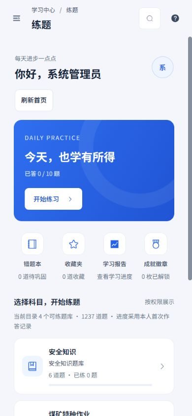
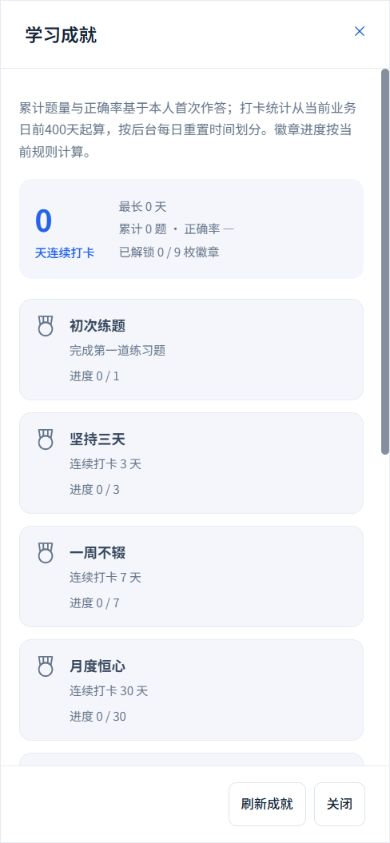
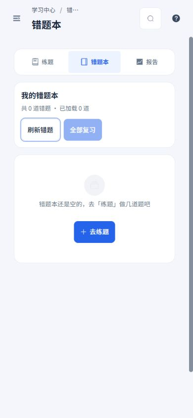
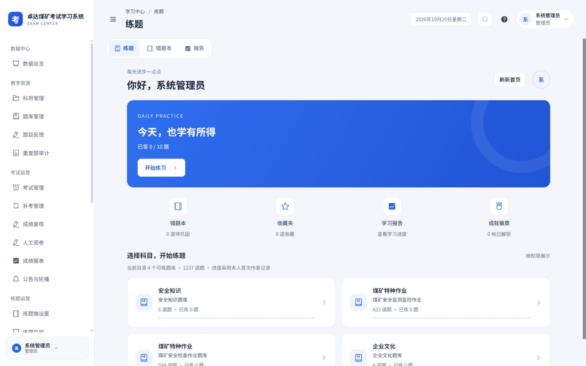
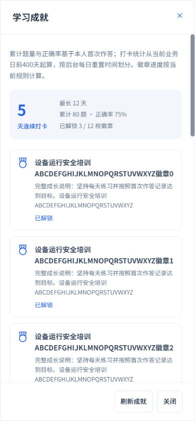
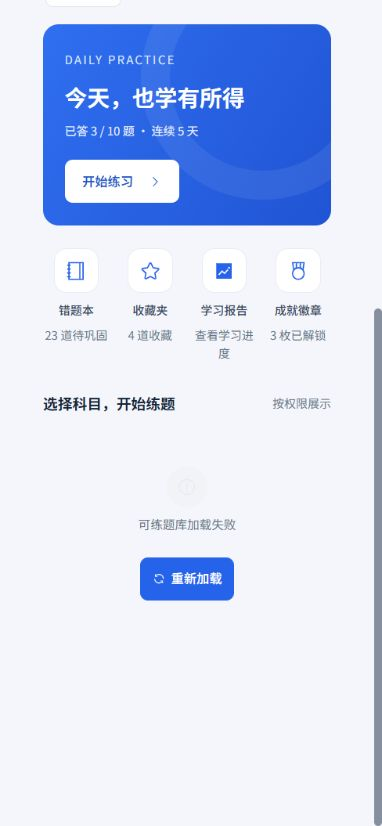
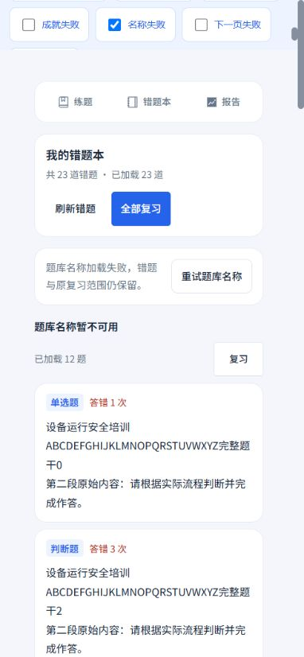
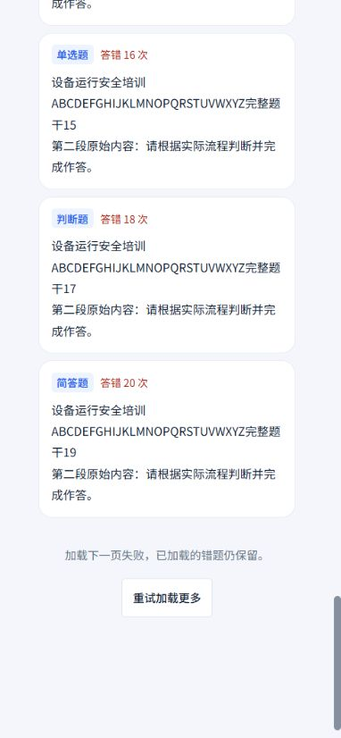
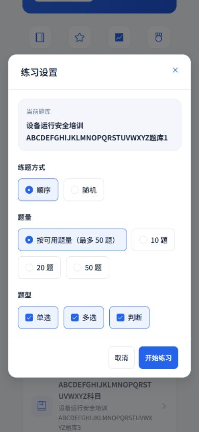

2026-10-20 · Workbuddy 01 · 本轮本地实施：练题首页、错题本、学习成就弹窗
范围准确，局部失败可恢复
沿用白侧栏、浅灰蓝底、蓝色操作与16 px卡片。手机标题和操作自然换行，长题库、题干与徽章完整阅读，功能开关、题型、目录权限和原练习参数保持。
本轮落地
- 首页题库目录、错题及收藏数量、每日任务、练习进度各自显示失败并可独立重试；目录失败仍保留成功的其他区域，读取失败不显示假零数。刷新等待时防止重复请求。
- 题库和总题量按原目录与服务端可访问列表的交集计算，与屏幕所显示的卡片一致；没有目录结果时不扩大范围。题目为空的题库保持禁用，原顺序、随机、题量及题型入参保持。
- 学习成就增加刷新，手机全屏、正文滚动，固定44 px刷新和关闭。徽章名称与说明长文本换行；未开放与加载失败分别说明，零记录正确率显示“—”。
- 成就累计题量与正确率基于本人首次作答；打卡从当前业务日前400天起算，业务日按后台每日重置时间划分，徽章沿用现有规则。
- 错题本增加刷新与名称独立重试，未知名称不再冒充“其他题库”；名称失败时保留题目和原bankId复习范围。题干保留段落，分组名称完整换行，统一空状态提供去练题入口。
- 错题分页失败保留已加载题目与原页重试，下一页等待期间禁止刷新，首屏刷新失败显示未知数量并禁止复习，恢复后仍使用原全部或按库复习路由；无错题时按钮采用真实禁用样式。
实际数据只读核验
当前管理员目录4个可练题库、1237道题；本人错题0、收藏0，今日已答0 / 10题，成就解锁0 / 9枚。数据来自实际接口，截图未替换成设计数字。未开始练习、创建复习会话、提交答案或修改权限。







长内容与失败样例
以下均为真实Vue组件配合独立模拟接口。多页错题、长题库名称、徽章与失败响应均为样例，不连接业务接口。











分页失败后重试，已加载数量从20 / 23恢复到23 / 23；题库名称单独恢复后，题目和全量范围保持。
验证结果
- 4个测试文件共25项通过，覆盖目录交集、真实数量、功能关闭不请求、局部失败独立恢复、重复刷新保护、错题原页重试与原复习参数，及既有考生页面与练习设置行为。
- 31组布局记录覆盖320×740、390×844、844×390、1440×900，整页和所测弹窗无横向溢出，弹窗底部操作均可见。包含实际与模拟的首页、成就、错题空态及错误场景。
- TypeScript、生产构建、设计脚本语法及Git差异空白检查通过；设计目录62个现行条目及既有稳定ID保持。
- 本轮修改限前端与设计验收资料；现有权限、功能开关、题型、考务与安全能力保持。